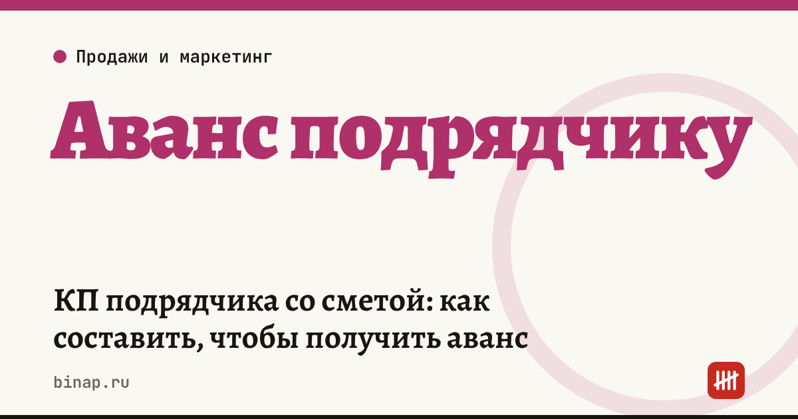

КП подрядчика со сметой: как составить, чтобы получить аванс

Заказчик соглашается на аванс, когда видит, за что именно платит: материалы, первый этап работ, сроки. Поэтому КП подрядчика со сметой строится вокруг графика «этап — срок — сумма к оплате», а аванс привязан к понятной вещи — закупке материалов. Без такого графика подрядчик работает на свои деньги до подписания акта и попадает в кассовый разрыв.
Коротко
- По общему правилу ГК заказчик платит после сдачи работы, если договор не предусматривает аванс (ст. 711 ГК). Аванс нужно договорить и прописать.
- Привязывайте аванс к закупке материалов и первому этапу — это понятно заказчику.
- Смета в КП — укрупнённая: этапы, материалы, работы. Подробная — в приложении.
- Укажите, какая цена: твёрдая или приблизительная (ст. 709 ГК) — от этого зависит, можно ли её менять.
- Если заказчик не даёт аванс без гарантий, предложите банковскую гарантию возврата аванса.
Сроки, изменения и разборы для ИП и самозанятых — каждое утро в Telegram и MAX. Подпишитесь, чтобы не пропустить.
Структура КП подрядчика
- Объект и задача: «Ремонт офиса 120 м², срок — 6 недель».
- Что входит: перечень работ укрупнённо и что не входит.
- Смета по этапам: материалы, работы, итого.
- График работ и оплат: этап — срок — сумма — что получает заказчик.
- Условия цены: твёрдая или приблизительная, что будет при изменении объёма.
- Гарантия и опыт: гарантийный срок, 1–2 похожих объекта.
- Срок действия КП и следующий шаг.
Шаблон КП, график работ и оплат и письмо о сдаче этапа — скачать бесплатно.
Пример графика оплат
Расчёт редакции, цифры условные. Договор — 1 200 000 ₽, из них материалы — 500 000 ₽.
| Этап | Срок | Оплата | Сумма |
|---|---|---|---|
| Аванс на материалы | до начала работ | 30% | 360 000 ₽ |
| Черновые работы | 2 недели | 30% после акта | 360 000 ₽ |
| Чистовые работы | 3 недели | 30% после акта | 360 000 ₽ |
| Сдача объекта | 1 неделя | 10% после итогового акта | 120 000 ₽ |
Аванс 360 000 ₽ покрывает большую часть материалов, а оплата после каждого этапа не даёт долгу заказчика расти. Без такого графика подрядчику пришлось бы вложить 500 000 ₽ своих денег и ждать оплаты до конца работ. Сколько денег нужно, чтобы продержаться до оплаты, — в калькуляторе кассового разрыва.
Если заказчик против аванса
- Уменьшите аванс до стоимости материалов первого этапа.
- Предложите оплату материалов напрямую поставщику по счёту.
- Банковская гарантия возврата аванса снимает риск заказчика — как она работает и сколько стоит, читайте в статье банковская гарантия для подрядчика.
- Короче этапы — чаще акты и оплаты.
Как пережить оплату после приёмки — в разборе кассовый разрыв у подрядчика. Общие правила КП — в статье коммерческое предложение, которое читают.
Все материалы — в разделе «Подрядчикам B2B».
Частые вопросы
Обязан ли заказчик платить аванс? Нет, если это не прописано в договоре. По общему правилу работу оплачивают после сдачи (ст. 711 ГК).
Можно ли поднять цену, если материалы подорожали? Если цена в смете твёрдая — по общему правилу нет. Если приблизительная — можно обсуждать при существенном превышении, но порядок лучше прописать в договоре.
Что делать, если заказчик тянет с подписанием акта? Направьте акт письменно и сохраните доказательства отправки. Как сдавать этап — в шаблоне письма заказчику на странице шаблонов.